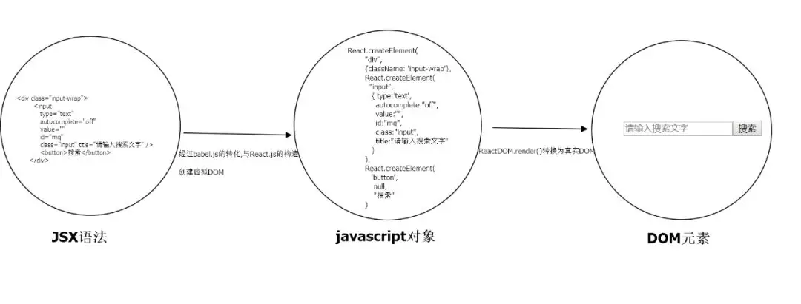

react jsx
JSX是什么?
全称: JavaScript and XML
定义: 可拓展(自定义)标记性语言，基于 JavaScript，融入了 XML，我们可以在 js 中书写 xml，使用 JSX 可以很好的描述 UI 在页面中应该呈现它应有的交互形式
注意:
- React 中并没有模板语言（类似 Vue 的 template 的），但是它具有JavaScript的全部的功能
- 可以在 JS 中书写 XML（HTML） 只能有且仅有一个顶层元素，当然也可以借助 React 提供的Fragment(也叫占位符)这个内置组件将你写的 JSX 子元素给包裹起来，可以包含子节点，也支持插值表达式 {表达式}
- 为了便于阅读，return 返回的 jsx 内容，用一个圆括号()包裹起来，这样可以将 JSX 拆分为多行。这样做不是强制要求的，但是这可以避免遇到自动插入分号陷阱
如下所示:
import React from "react";
import ReactDOM from "react-dom";
class Acomponent extends React.Component {
render() {
// return 后面带着一个圆括号，只是为了换行显示，根节点最顶层只能是一个元素
return (
<div>
<h1 title="我是LSO">一个靠前排的90后帅小伙</h1>
<h2>欢迎关注MusicTen</h2>
</div>
)
}
}
// 或者使用React提供的Fragement占位符组件也可以，但是先引入
import React, { Componnet, Fragment } from "react";
import ReactDOM from "react-dom";
class Acomponent extends Component {
render() {
return (
<Fragment>
<h1 title="我是LSO">一个靠前排的90后帅小伙</h1>
<h2>欢迎关注MusicTen</h2>
</Fragment>
)
}
}
使用 React 一定要引入 React 库，引入这个是为了解析识别 JSX 语法糖（React.createElement()函数的替代）；当然另一方面也是为了创建虚拟 DOM。
经过babel编译，Babel 会把 JSX 转译成一个名为 React.createElement() 函数调用
引入 react-dom 是为了渲染组件，将组件挂载到特定的位置上，同时将虚拟 DOM 转换为真实 DOM，插入到页面中
